Analysering
brukeranalyse, markedsundersøkelse, feltundersøkelse, kartlegging, kravspesifikasjon
Vi tilbyr en komplett designsyklus for kunder som trenger produkt utviklet. Vi jobber med kunden kun der ekspertisen vår er nødvendig. Vår ekspertise omfatter ikke bare industriell produktutvikling, men også den visuelle delen rettet mot markedsføring og presentasjon av produktet. For en mer helhetlig opplevelse av produktet og brandet ditt kombinerer vi dette med tjenestedesign og interaksjonsdesign. Les mer om teamet bak arbeidet.
Form følger funksjon. Fortsatt.
Hele produktutviklingssyklusen kan beskrives i seks hovedfaser, hvor hver fase også er fordelt i noen mindre steg. Prosessen er ofte ikke lineær, men heller spiralformet: i dialog med kunden gjør vi flere iterasjoner, tilbyr variasjoner og utarbeider løsninger.
brukeranalyse, markedsundersøkelse, feltundersøkelse, kartlegging, kravspesifikasjon
skisse, ideutvikling, konseptutvikling, løsningsforslag, raske visualiseringer
detaljerte skisser, 3D-modell, form utforsking, funksjonsanalyse, materialvalg, Mock-ups — se industridesign
Kvalitet bilder, animasjon, bilder og video, bruk i kontekst og omgivelser
Teste fysisk: ergonomi, form, funksjoner, materialer, formspråk, bruksituasjoner. Les hvordan lage prototype
Bekrefte og validere valg, endelig CAD-modell, toleranser, produksjonskalkulering, forberedelse for produksjon, tekniske tegninger. Se fra oppfinnelse til produksjon
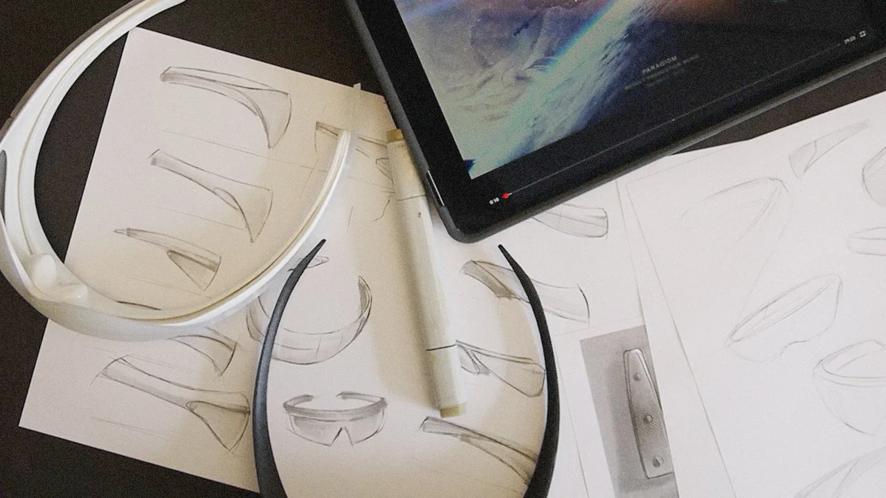
Hjelp med å definere, utarbeide og ferdigstille konsept som svarer til brukerbehov
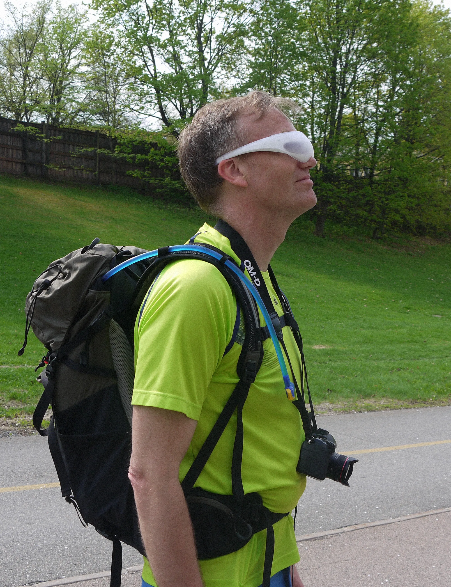
Finne brukerens kjerne behov som vi skal løse med produktet
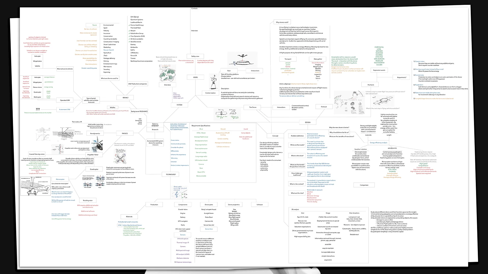
Samle informasjon om produktet og konkurransen for å finne strategisk løsning
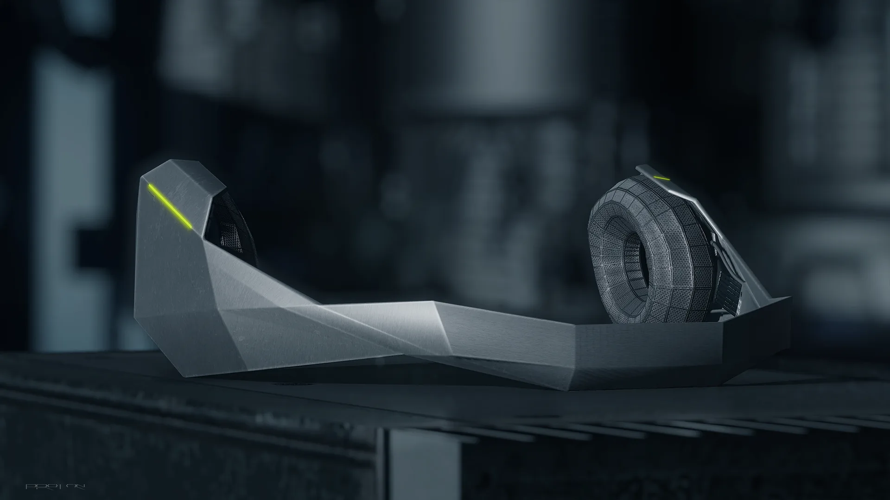
Visualisering og produkt renders for markedsføring og presentasjoner. Se prosjektene våre
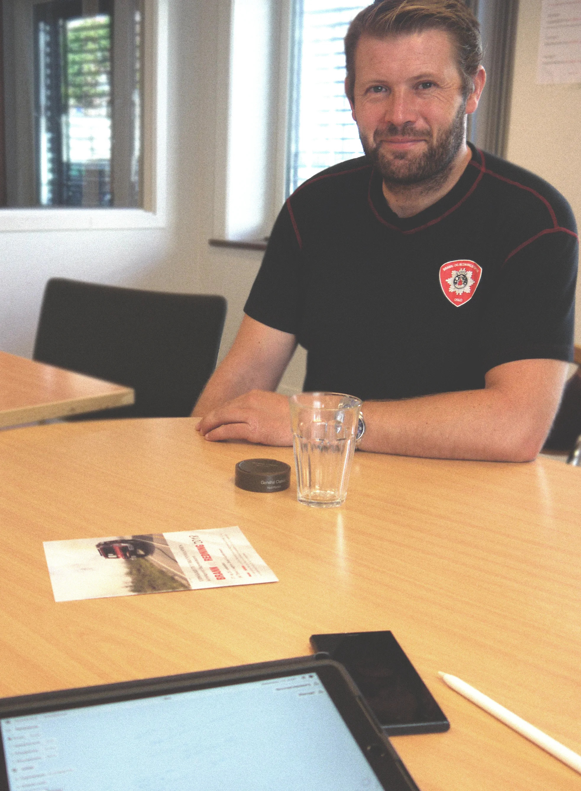
Plane og fasilitere workshops for å samle innsikt og feedback fra brukerne
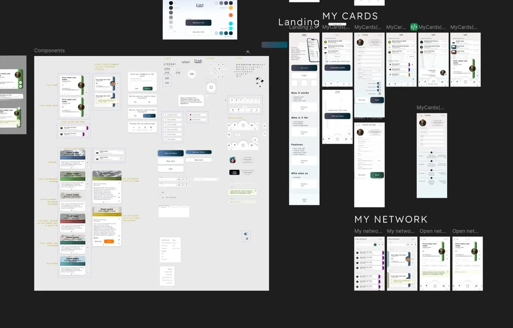
User interface design for produkter med interaksjon på skjermen
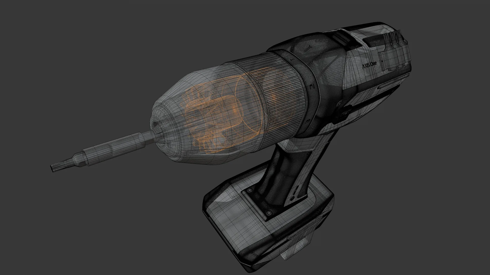
CAD-modellering med Fusion 360 eller SolidWorks
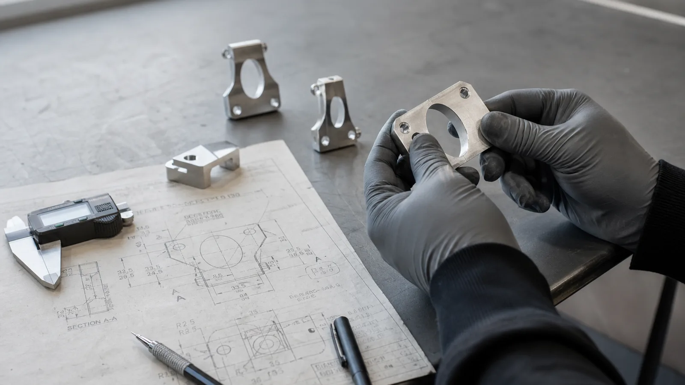
Design for manufacturability — tilpasning for effektiv og kostnadseffektiv produksjon.
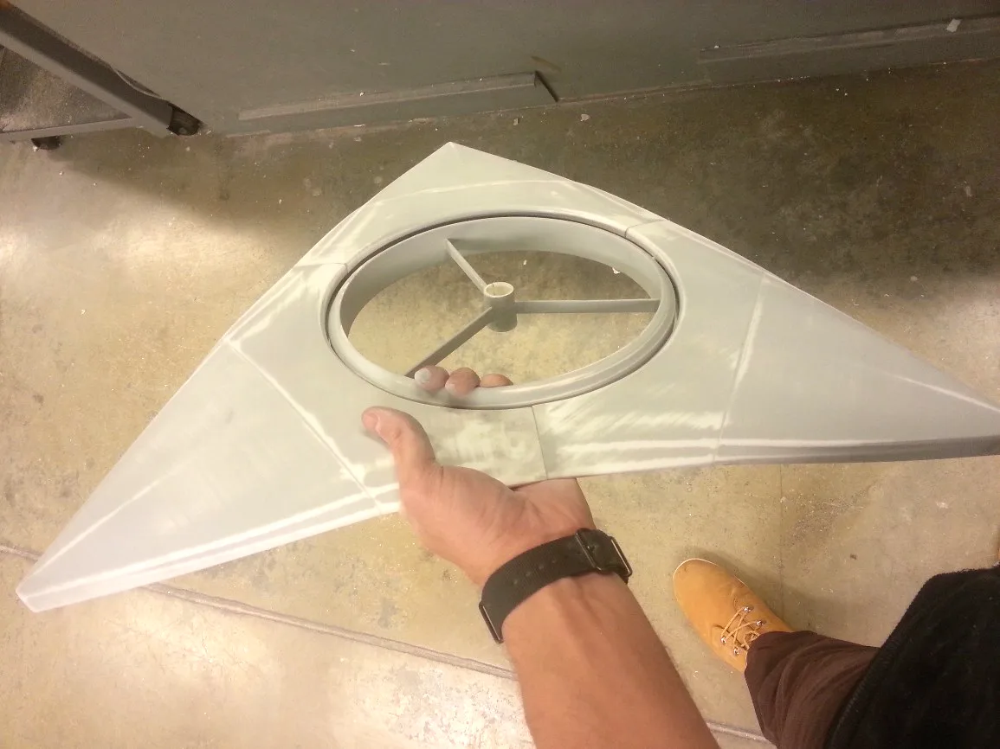
Lage prototyper for å teste form, ergonomi, funksjon og materialer. Les mer i prototypeguiden
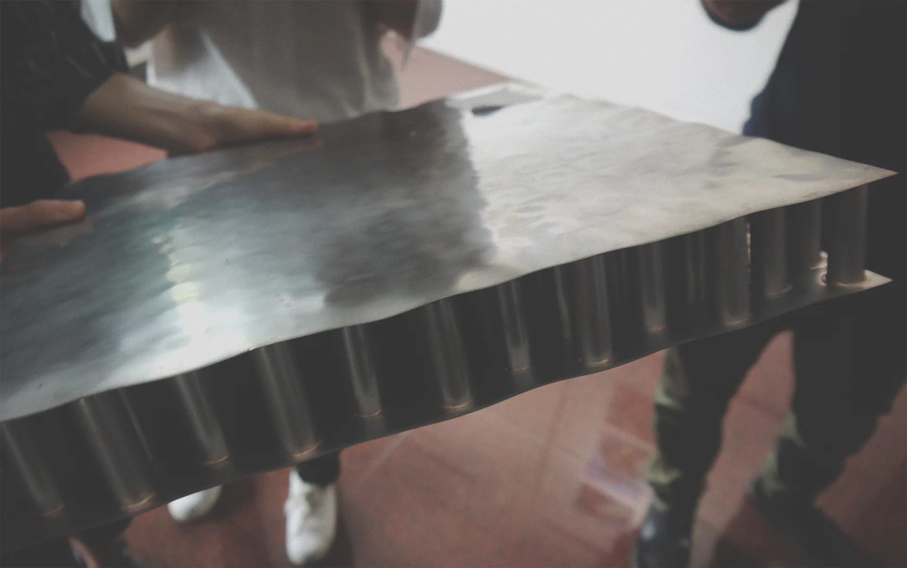
Hjelp med å danne kontakt med lokal produksjonsleverandører og oppfølging med produksjonsplanlegging
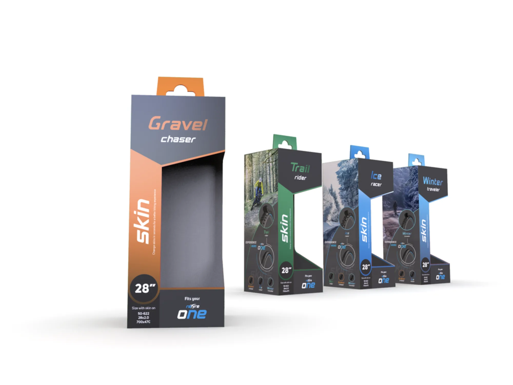
Emballasje, innpakning, labeldesign og instruksjoner for produktet
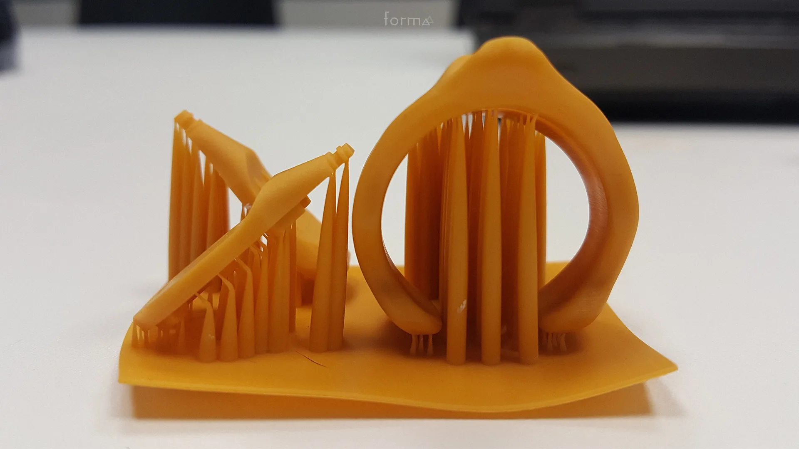
Rask produksjon av prototyper med 3D-printer eller CNC-maskiner
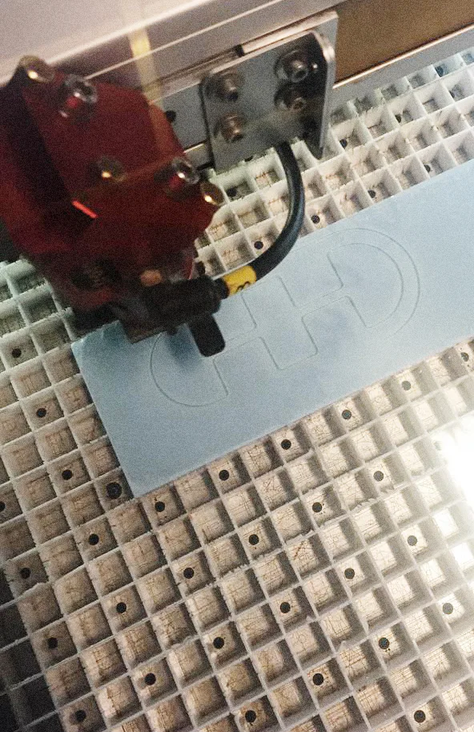
Hjelp med koordinering med produsenter og oppfølging
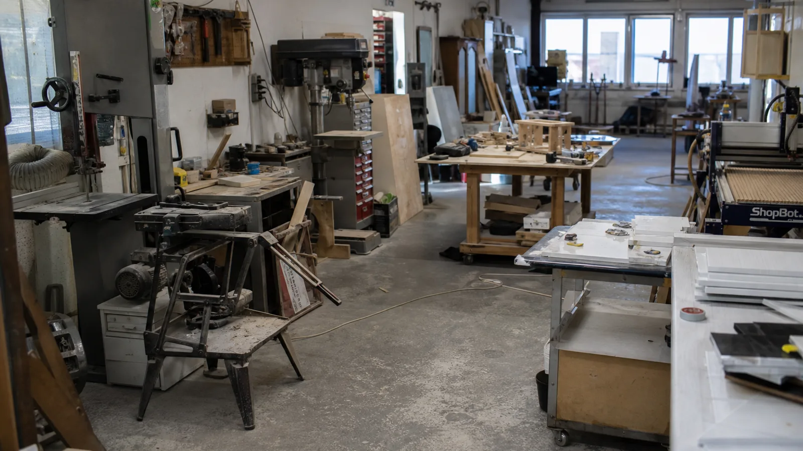
Vi har tilgang til bred type verksteder for utvikling av treverk, metall, plast og tekstil, inkludert 3D-printere og CNC-maskiner for å produsere prototype eller småserie produkter.
Vi er i dialog med potensielle partnere for produksjon i Norge og jobber aktivt med å etablere nye kontakter for mer varierte produksjonstyper – med lokal arbeidskraft og norske råvarer der det er mulig, for kortere og sikrere transportveier og mer bærekraftig produksjon.
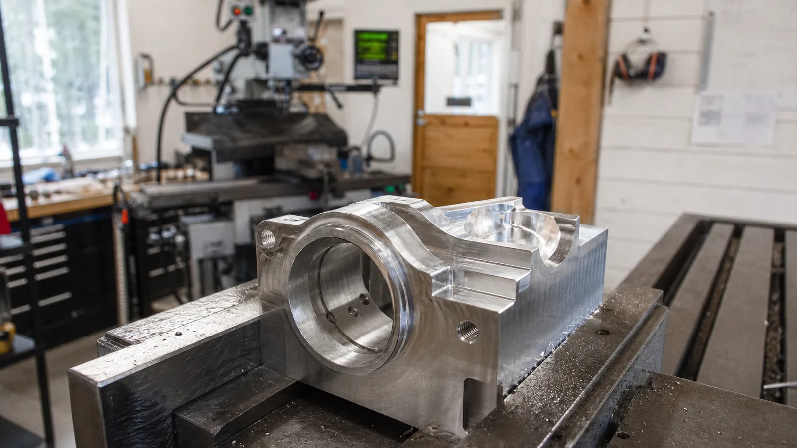
Vi samarbeider med selskaper som har egen produksjon i Kina, lang erfaring med frakt og logistikk til Europa, og tilbyr sertifisert validering etter relevante standarder – fra CE-merking og produksjonstesting til kvalitetskontroll før utsendelse.
Parallelt er vi i dialog med flere leverandører i Europa og Skandinavia, og jobber med å utvide produksjonskapasiteten for ulike materialer og volum – slik at vi kan finne riktig løsning for både prototyper, lavserie og større serier.
Kina-basert selskap som spesialiserer seg på presisjonsprototyper, CNC-maskinering og lavvolumsproduksjon for produktutvikling. Vår samarbeidspartner innen sertifisert validering og småserieproduksjon.
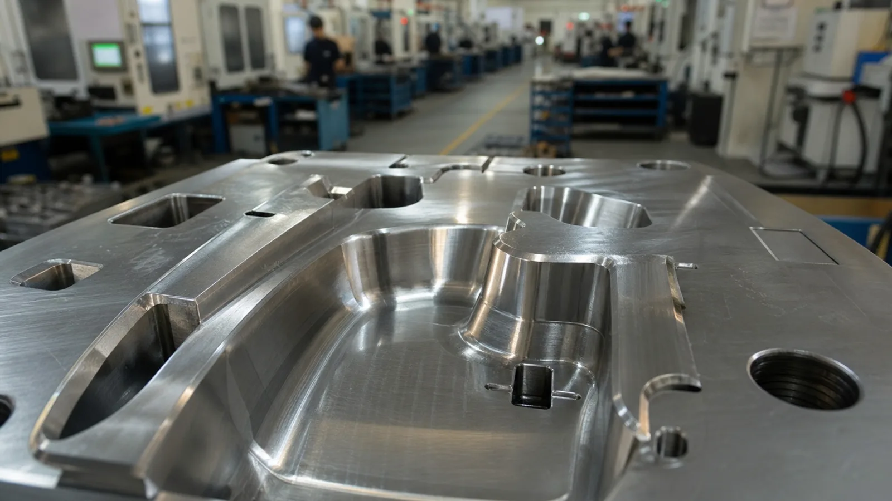